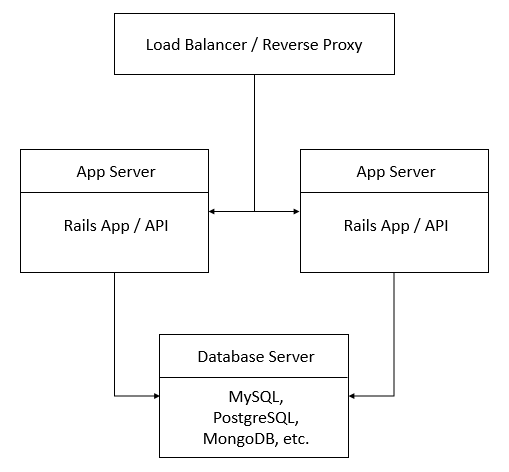

Setting up a dedicated MySQL server to host Ruby on Rails application servers, Ruby, Rails, MariaDB, MySQL, NoSQL, Scaling.
Scaling Ruby on Rails: Setting up a dedicated MySQL server (part 2) - CentOS, Fedora
Difficulty: 4
Time: 30 minutes
This article provides information about creating a database layer using MySQL to host application servers running Ruby on Rails.
Prerequisites
Make sure to have Ruby on Rails using RVM installed and running.
This article is part 2 of the scaling Ruby on Rails series. To refer to the first or third part, see:
Architecture of the database server layer - an overview
To make the database server centrally accessible, a load-balancer, two application servers, and one database server to set-up the database server layer is
required. The architecture will look like the following diagram:

This article assists you in setting up a dedicated MySQL server and scaling Ruby on Rails applications between the servers in CentOS or Fedora.
distributions.
Install MySQL and other dependencies
- Update the operating system packages, and then install development tools.
sudo yum -y update
sudo yum groupinstall -y 'development tools'
sudo wget http://dl.fedoraproject.org/pub/epel/7/x86_64/e/epel-release-7-5.noarch.rpm sudo rpm -ivh epel-release-7-5.noarch.rpm
- Update everything again, and then install the required libraries.
uired libraries.
sudo yum -y update
sudo yum install -y curl-devel vim sqlite-devel libyaml-devel
- Download and install the MySQL database server.
sudo yum --disablerepo=epel install mysql-server
- Initiate the MySQL server daemon.
sudo service mysqld start
- Run the MySQL installation process.
sudo /usr/bin/mysql_secure_installation
After you have finished the above command, a welcome screen will display.
- At the prompt, since you don't have a current password for root, press Enter, then you'll be prompted to create a password.
- Answer the following questions by pressing Y.
Set root password? --> Y
Remove anonymous users? --> Y
Disallow root login remotely? --> Y
Remove test database and access to it? --> Y
Reload privilege tables now? --> Y
Create a database, database user, and database connection
- Establish a database connection using MySQL client, and then enter the password for root that was previously set up.
sudo mysql -u root -p
- Create a sample database.
create database rails_Database_name;
- Create a new user for your database, and then grant remote and local access to this user.
CREATE USER 'rails_UserName'@'localhost' IDENTIFIED BY 'pwd';
CREATE USER 'rails_UserNamer'@'%' IDENTIFIED BY 'pwd';
- Grant access rights to any specific user by typing:
GRANT ALL ON rails_myapp.* TO 'rails_UserName'@'localhost';
GRANT ALL ON rails_myapp.* TO 'rails_UserNamer'@'%';
Revoke the privileges.
FLUSH PRIVILEGES;
Exit from MySQL.
exit
- Enable remote connections, open the MySQL configuration
my.cnf, and then edit it using the vim text editor.
sudo vim /etc/my.cnf
Add the following lines in this file:
[mysqld]
..
.
bind-address = 0.0.0.0
- Save and exit the file.
Create a Rails application
- Install the gem for MySQL, and then update the gem.
gem install mysql2
gem update --system
- Install the Rails package.
gem install rails
- Create a Rails application, and then use the
-d mysql option to set MySQL as the database.
rails new Your_application -d mysql
- Go to your application directory.
cd Your_application
- Open the
database.yml file.
sudo vim config/database.yml
- Locate the
default section, and then update the following line, replacing Your_password with your MySQL password.
password: Your_password
- Find the
production section towards the end of the file. We'll be adding in our configuration details.
The database, username, and password lines will be there and should be pulling in the right values - they can be left as is.
Add in these 2 lines right after production:
adapter: mysql
encoding: utf8
- Then add these lines after the password line.
host: localhost
port: 3306
pool: 10
So the final product looks something like this:
production:
adapter: mysql
encoding: utf8
database: rails_Database_name
username:Your_application
password: Your_password
host: localhost
port: 3306
pool: 10
- Save and exit the file.
Install MySQL dependencies
- Open the
Gemfile.
vim Gemfile
- Add the following code at the end of the file:
gem 'mysql2', '~> 0.3.18'
- Comment out the following line towards the beginning of the file.
gem 'mysql2'
- Save and exit the file.
- Install all the dependencies of
Gemfile.
bundle install
- Create database for Rails application using the following command
rake db:create
- To test your Rails application execute the following command
rails server --binding=Your_IP_address
Conclusion
In this article, you learned to scale a Ruby on Rails application, and then set up a dedicated MySQL Server on CentOS or Fedora.